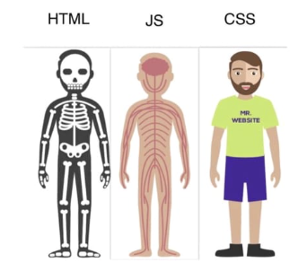
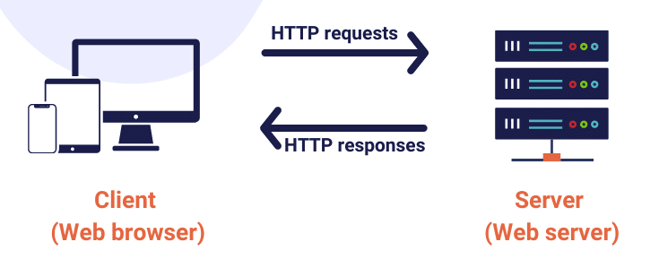
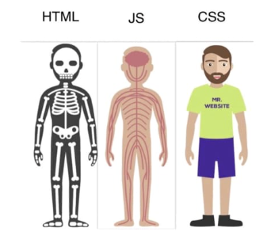

LINGUAGENS
FRONT-END



A internet é o conjunto de redes de computadores que, espalhados por todas as regiões do planeta, conseguem trocar dados e mensagens utilizando um protocolo comum.
Como funciona?Resumidamente quando acessamos qualquer coisa na internet estamos fazendo basicamente a comunicação entre dois dispositivos nesta grande rede, ou seja, estamos estabelecendo uma comunicação entre nosso computador, tablet, smartphone, ... com um servidor em algum lugar do planeta.
Cada interação que fazemos em um site ou aplicação que acessamos, diversas requisições são disparadas ao servidor onde a aplicação está hospedada. Essas requisições por sua vez retornarão algum tipo de resposta para cada uma destas requisições.

Existem dois tipos de linguagens para desenvolvermos para internet: as linguagens client-side e as linguagens server-side. Você pode ver estes nomes meio diferentes em outros lugares como por exemplo, front-end, se referindo às linguagens client-side e back-end se referindo às linguagens server-side. Não se preocupe, são a mesma coisa. Mas nesse texto, para que você possa entender melhor, vamos usar client-side e server-side.
As linguagens server-side são linguagens que o SERVIDOR entende. Isso quer dizer que vai escrever um código onde o servidor vai processá-lo e então vai mandar para o seu navegador a resposta.
As linguagens client-side são linguagens onde apenas o seu NAVEGADOR vai entender.
Veja mais...
O front-end da web é o desenvolvimento da interface gráfica de um site, ou seja, ela compreende tudo o que o usuário irá ver e integeragir quando estiver acessando um site através do navegador.
Linguagens
Ao contrário do front-end, o usuário de uma aplicação web não vê os códigos desenvolvidos no back-end, pois tudo o que é implementado é executado pelo servidor onde a aplicação está hospedada.
É o código desenvolvido no back-end que conecta com o banco de dados, gerencia as conexões dos usuários e fornece todos as informações, imagens, vídeos, ou quaquer conteúdo que o front-end requisitar.
Qualquer linguagem que seja capaz de comunicar-se através dos protocolos de comunicação web como http e https por exemplo, pode ser utilizada para desenvolver o back-end de uma aplicação web.
Alguns exemplos de liguagens de programação que podem ser utilizadas para o desenvolvimento do back-end...
Python PHP Java C# NodeJs